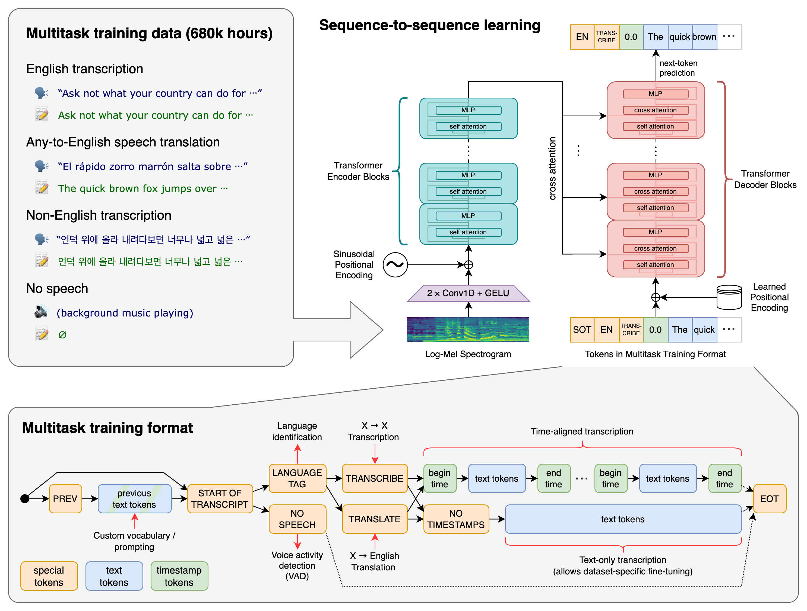

8.2 Automatic Speech Recognition
Robust Speech Recognition via Large-Scale Weak Supervision
Created Date: 2025-05-31
We’ve trained and are open-sourcing a neural net called Whisper that approaches human level robustness and accuracy on English speech recognition.
Whisper is an automatic speech recognition (ASR) system trained on 680,000 hours of multilingual and multitask supervised data collected from the web. We show that the use of such a large and diverse dataset leads to improved robustness to accents, background noise and technical language. Moreover, it enables transcription in multiple languages, as well as translation from those languages into English. We are open-sourcing models and inference code to serve as a foundation for building useful applications and for further research on robust speech processing.

Figure 1 - Whisper Architecture
The Whisper architecture is a simple end-to-end approach, implemented as an encoder-decoder Transformer. Input audio is split into 30-second chunks, converted into a log-Mel spectrogram, and then passed into an encoder. A decoder is trained to predict the corresponding text caption, intermixed with special tokens that direct the single model to perform tasks such as language identification, phrase-level timestamps, multilingual speech transcription, and to-English speech translation.
8.2.1 Quick Start
pip install -U openai-whisper
import whisper
model = whisper.load_model("small")
result = model.transcribe('res/audio/voice_sample.mp3')
print(result['text'])Being able to communicate positions within a room is critical to our ability to focus light in a certain area or place objects in their proper location on stage, but it goes even deeper than that. This proficiency provides the basic vocabulary in a common language that is spoken by production and staging professionals around the world.
8.3.2 Source Code
08_audio/2_whisper command: pytest